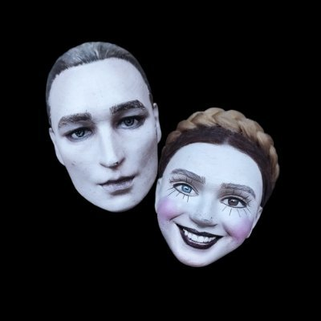
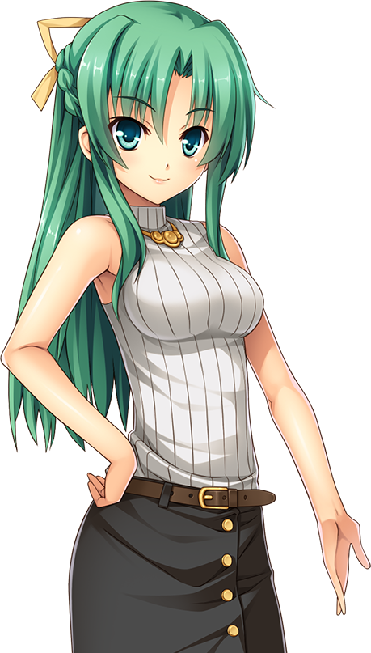
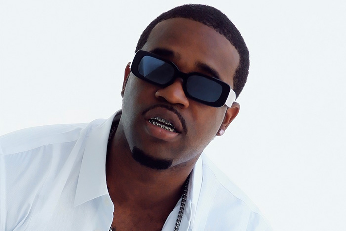
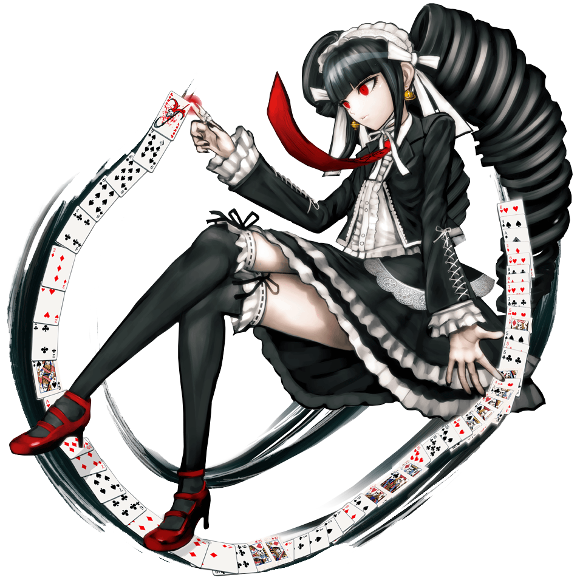

Miu Iruma

The Ultimate Inventor from
Danganronpa V3: Killing Harmony.
She is the promiscuous of the group, and is a world famous inventor. Miu's
time at the academy is spent with constant insults and swearing at the others,
and special attention towards the Ultimate Robot Keebo.
IC3PEAK

A Russian experimental electronic music duo. They use their music and
platform as protest against russian police. They originally released music
in English, but switched to releasing music in Russian. Although they have
won awards, they have also been detained by Russian police for their actions.
Shion Sonozaki

A waitress from Higurashi: When They Cry. She is a protagonist
and school girl in the small village and has a twin sister. She befriends
everyone and has feelings for the main protagonist, and another unseen
individual. It is never wise to cross her.
A$AP Ferg

An American rapper, singer, and songwriter. He is a member of the hip
hop collective A$AP Mob. Born and raised in Harlem, NY, he makes rap
and trap music, and often works with fellow A$AP Mob members, including
A$AP Rocky and A$AP Yams.
Celestia Ludenberg

The Ultimate Gambler from Danganronpa: Trigger Happy Havoc. The
manipulative of the group, she is a renown gambler and loves her milk tea.
Celestia pushes her luck in intense ways, and it has often paid off for her.
She is often seen bossing around others, especially the Ultimate Doujin Artist
Hifumi Yamada.